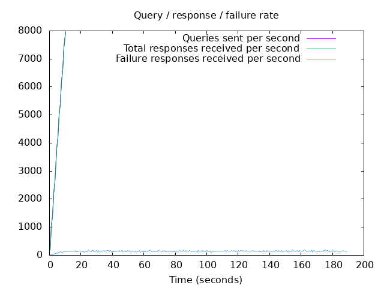
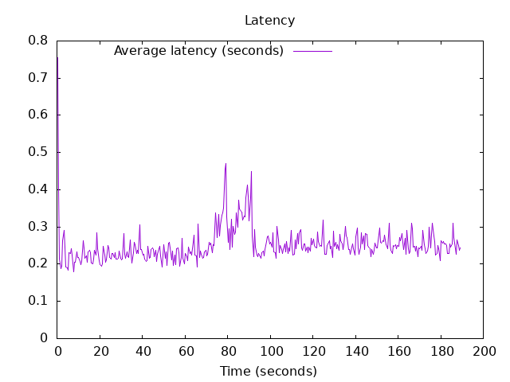

DNS Resolution Performance Testing Tool Version 2.14.0 [Status] Command line: resperf -P 20250619-1149.gnuplot -M doh -s 79.127.218.224 -O doh-uri=https://protective.joindns4.eu/dns-query -d ../domains_shuffled.list -C 500 -m 8000 -b 1400 -q 500000 -R -r 10 -c 180 -t 30 -F 0 [Status] Sending [Status] Ramp-up done, sending constant traffic [Status] Waiting for more responses [Status] Testing complete Statistics: Queries sent: 1479999 Queries completed: 1479998 Queries lost: 1 Response codes: NOERROR 1002261 (67.72%), SERVFAIL 27203 (1.84%), NXDOMAIN 450534 (30.44%) Run time (s): 218.125019 Maximum throughput: 8000.000000 qps Lost at that point: 0.00% Connection attempts: 882 (700 successful, 79.37%) DNS-over-HTTPS statistics: HTTP/2 return codes: 200: 1479998
 